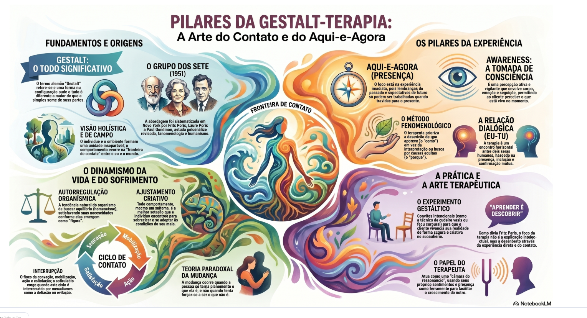

01
Awareness
Percepção ativa e encarnada do que se passa no campo organismo-ambiente. Não é simples consciência racional, mas um saber que inclui corpo, sensação e emoção no aqui-e-agora.
Uma encenação comentada sobre ansiedade, evitação e contato terapêutico
Sobre o Trabalho
A Gestalt-terapia é uma abordagem humanista-existencial desenvolvida por Fritz Perls e Laura Perls a partir dos anos 1950, com contribuições fundamentais de Paul Goodman. Partindo de uma visão de ser humano integrado que não separa mente, corpo e ambiente, propõe uma clínica radicalmente voltada para o aqui-e-agora, para a experiência vivida na sessão, e para o encontro genuíno entre terapeuta e cliente.
Este trabalho propõe uma encenação comentada que coloca esses conceitos em movimento: ao invés de descrever a teoria de forma abstrata, um grupo de alunos encenou uma sessão terapêutica e interrompeu a cena em momentos-chave para contextualizar teoricamente o que estava acontecendo. O resultado é uma experiência pedagógica que une rigor conceitual e vivência prática.
Os conceitos centrais trabalhados incluem o aqui-e-agora, a awareness (percepção ativa e encarnada), o contato e seus ciclos, o ajustamento criativo e os mecanismos de interrupção do contato especialmente a deflexão. O caso clínico ficcionado acompanha um cliente de 28 anos com queixas de ansiedade e padrões sistemáticos de evitação, que chega à terapia em conflito com sua própria experiência de sofrimento.
Mais do que transmitir conteúdo, o trabalho convida à percepção: o que acontece neste momento quando nos encontramos com alguém que sofre?
Material Audiovisual
Encenação terapêutica ilustrando a sessão e as pausas teóricas que contextualizam cada momento clínico.
Documento Completo
O documento traz o roteiro integral da encenação, o referencial teórico detalhado, os conceitos-chave e as referências bibliográficas utilizadas na elaboração do trabalho.
Revisão em Áudio
Versão em áudio do conteúdo principal ideal para revisar no caminho ou enquanto se exercita. Duração aproximada: confira ao iniciar a reprodução.
Baixar MP3Visão Geral
O infográfico abaixo apresenta de forma visual os fundamentos que sustentam a abordagem gestáltica da base filosófica às práticas clínicas centrais.

Glossário Teórico
01
Percepção ativa e encarnada do que se passa no campo organismo-ambiente. Não é simples consciência racional, mas um saber que inclui corpo, sensação e emoção no aqui-e-agora.
02
Princípio fundamental da Gestalt-terapia: o foco terapêutico recai sempre sobre o que está vivo e presente na experiência imediata, não em narrativas sobre o passado ou o futuro.
03
Sequência que descreve como o organismo se relaciona com o ambiente: sensação → consciência → mobilização → ação → contato → retirada. Interrupções nesse ciclo são fontes de sofrimento.
04
A resposta que o organismo encontra para lidar com o campo disponível. A pessoa sempre faz o melhor possível com os recursos que tem no momento o sintoma é uma solução, não um defeito.
05
Mecanismo de interrupção do contato em que a pessoa desvia a energia ou a atenção para evitar o encontro pleno com a experiência ou com o outro comum em padrões de ansiedade e evitação.
06
Formulada por Arnold Beisser (1970): a mudança genuína ocorre não quando a pessoa tenta ser diferente, mas quando se torna mais plenamente o que já é. O esforço de mudar muitas vezes impede a mudança.
07
Postura clínica de descrever e não interpretar o que aparece na experiência. Inclui a epochè (suspensão de pré-conceitos) e a equalização (abertura a todos os dados do campo, sem hierarquia prévia).
08
Proposta criativa que emerge da experiência presente do cliente e do terapeuta, convidando à exploração de novas formas de contato, percepção e ação no próprio espaço terapêutico.
Fontes